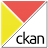

add Data Feed
Altri geo feed realizati con Dati Aperti
- Incidenti stradali San Benedetto del Tronto
-
Siti italiani patrimonio UNESCO
formato originale: shapefile --> trasformato: GeoJSON -
ultimi 20 terremoti in Italia
piped: INGV -> feedburner -> RSS -> geonames > GeoRSS -
Earthquakes worldwide +5
da USGS - formato: GeoRSS -
Earthquakes worldwide - last week
da USGS - formato: GeoRSS
{var dateA = value.split(' ')[0].split('.');return new Date(dateA[2],dateA[1]-1,dateA[0]);}
},
layer:{ name:'Incidenti stradali SBT 2012',
markerType : 'symbol',
markerImage : 'resources/icons/default/symbols/red_circle.png',
smallImage : 'resources/icons/default/symbols/red_circle.png',
markerImageType : 'png'
}
});){kind=link}
;){kind=link}
?|\\.[0-9]+\\b)?/i',
matchIndex: 1,
normalSizeValue: 3,
pow: 2
}
}
});){kind=link}
Open Data Matera
layer realizzati con dati publici del Comune di Matera- Farmacie, Parafarmacie , Erboristerie , Ricettivita
- Ricettivita (GeoJson) rappresentazione categorizzata, Chiese rupestre (GeoJson), Aree Camper (GeoJson)
- MateraPulita (kml), rappresentazione come definita dal kml MateraPulita (xml) via feed parser plugin: 'map_feed.parse.MateraPulita.js'; con filtro temporale
- ZTL - APU (kml) rappresentazione cartografica con colori, ZTL - APU (geojson) rappresentazione semplice
- Impianti di telefonia radio e tv (kml) rappresentazione come definita dal kml, Impianti di telefonia radio e tv (geojson) rappresentazione definita esplicitamente
- Suono della Clava (geojson)
- Beni culturali Comune di Matera (csv)
- Beni culturali Comune di Matera (geojson)
- Eventi Condivisi (csv)
- Eventi Condivisi (plugin)
;){kind=link}
;){kind=link}
;){kind=link}
;){kind=link}
![Ricettivita (GeoJson)](javascript:maptune.addFeedLayer('http://dati.comune.matera.it/storage/f/2013-09-18T06%3A38%3A21.051Z/elenco-ricettivita-ago2013.geojson',{
type:'GeoJson',
format:'json',
flag:'open|showinfo|zoomto',
title:'Ricettivita',
parser:{
'title':'DENOMINAZIONE'
},
layer:{'name': 'Ricettivita',
'markerType':'categorical',
'category' :'TIPOLOGIA',
'categoryList' : {
'Affittacamere' : { 'markerImage' : 'resources/icons/map-icons-collection/lodging_0star.png',
'smallImage' : 'resources/icons/default/default-small_softgreen.png'
},
'Albergo' : { 'markerImage' : 'resources/icons/map-icons-collection/hotel_0star.png',
'smallImage' : 'resources/icons/default/default-small_green.png'
},
'Bed & Breakfast' : { 'markerImage' : 'resources/icons/map-icons-collection/bed_breakfast1-2.png',
'smallImage' : 'resources/icons/default/default-small_darkgreen.png'
},
'Agriturismo' : { 'markerImage' : 'resources/icons/map-icons-collection/hostel_0star.png',
'smallImage' : 'resources/icons/default/default-small_darkgreen.png'
},
'Casa Vacanza' : { 'markerImage' : 'resources/icons/map-icons-collection/daycare_big.png',
'smallImage' : 'resources/icons/default/default-small_darkgreen.png'
},
'Casa per Ferie' : { 'markerImage' : 'resources/icons/map-icons-collection/daycare_big.png',
'smallImage' : 'resources/icons/default/default-small_darkgreen.png'
},
'Aree Ricettive' : { 'markerImage' : 'resources/icons/map-icons-collection/campingtents.png',
'smallImage' : 'resources/icons/default/default-small_darkgreen.png'
},
'Turismo rurale' : { 'markerImage' : 'resources/icons/map-icons-collection/hostel_0star.png',
'smallImage' : 'resources/icons/default/default-small_darkgreen.png'
},
'ostello per la Gioventù' : { 'markerImage' : 'resources/icons/map-icons-collection/daycare_big.png',
'smallImage' : 'resources/icons/default/default-small_darkgreen.png'
}
},
'smallImage' : 'resources/icons/default/default-small_red.png',
'iconType' : 'normal',
'markerImageType' : 'png',
'initListState' : 'expanded'
}
});){kind=link}
;){kind=link}
;){kind=link}
;){kind=link}
;){kind=link}
;){kind=link}
;){kind=link}
{var dateA = value.split(' ')[0].split('\/');return new Date(dateA[2],dateA[1]-1,dateA[0]);},
label: 'true'
},
layer:{ name:'Eventi Condivisi',
description:'Mappatura beni immateriali',
markerType : 'categorical',
category : 'Tipologia',
categoryList: {
Musica : { 'markerImage' : 'resources/icons/map-icons-collection/music_classical.png',
'smallImage' : 'resources/icons/default/default-small_violet.png'
},
Teatro : { 'markerImage' : 'resources/icons/map-icons-collection/theater.png',
'smallImage' : 'resources/icons/default/default-small_violet.png'
},
Danza : { 'markerImage' : 'resources/icons/map-icons-collection/theater.png',
'smallImage' : 'resources/icons/default/default-small_violet.png'
},
Sport : { 'markerImage' : 'resources/icons/map-icons-collection/indoor-arena.png',
'smallImage' : 'resources/icons/default/default-small_orange.png'
},
Mostre : { 'markerImage' : 'resources/icons/map-icons-collection/museum_art.png',
'smallImage' : 'resources/icons/default/default-small_violet.png'
},
Cinema : { 'markerImage' : 'resources/icons/map-icons-collection/cinema.png',
'smallImage' : 'resources/icons/default/default-small_violet.png'
},
Tradizione : { 'markerImage' : 'resources/icons/map-icons-collection/farmstand.png',
'smallImage' : 'resources/icons/default/default-small_violet.png'
},
'Altri eventi' : { 'markerImage' : 'resources/icons/map-icons-collection/departmentstore.png',
'smallImage' : 'resources/icons/default/default-small_red.png'
}
},
markerImage : 'resources/icons/default/default_red.png',
smallImage : 'resources/icons/default/default-small_red.png',
markerImageType : 'png'}
});){kind=link}
;){kind=link}
Open Data - Provincia Autonoma di Trento
Dati pubblicati dal portale 'OPENdata TRENTINO' con licenza: "Open Data". La pubblicazione è basata sulla piattaforma open-source CKAN.- Beni culturali ed ambientali Elementi puntuali che individuano sul territorio gli beni culturali, architettonici e ambientali. Dataset scaricato in formato shapefile pubblicato da OPENdata TRENTINO, licenza: Open Data (link al portale)
- Piste ciclabili Elementi lineari che individuano sul territorio le piste ciclabili. Dataset scaricato in formato shapefile pubblicato da OPENdata TRENTINO, licenza: Open Data (link al portale)
Open Data - Torino
-
Torino Parcheggi
Live! data da Torino !
Open Data - Regione Lombardia
Dataset pubblicati dalla Regione Lombardia con licenza: Italian Open Data License v.2.0 (IODL 2.0). La pubblicazione è basata sulla "Social Data Platform Socrata;){kind=link}
;){kind=link}
;){kind=link}
;){kind=link}
;){kind=link}
Open Data - Provincia di Roma
Dataset pubblicati dalla Provincia di Roma con licenza: "Open Knowledge Definition". La pubblicazione è basata sulla piattaforma open-source CKAN.;){kind=link}
;){kind=link}
Open Data - Ministero della Salute
Dataset pubblicati dal Ministero della Salute da 'Open Data on Cloud' con licenza: IODL "Italian Open Data License". La pubblicazione è basata sulla tecnologia Cloud PaaS Platform as a Service (Microsoft Azure) e del toolkit, gratuito e Open Source, denominato OGDI Open Government Data Initiative;){kind=link}
;){kind=link}
;){kind=link}
;){kind=link}
Google My Maps - KML
Importazione di punti georeferenziati creato con Google MyMaps, e usufruibile attraverso il formato export KML attraverso Yahoo Pipes™ da 'proxi server'-
Leggi regionali in materia di Open Data
Info sull'iniziativa: http://blog.ernestobelisario.eu/2012/03/09/mappa-delle-leggi-regionali-in-materia-di-open-data/
da Google MyMaps - formato: kml -
Matera Chiese rupestre
da Google MyMaps -> YQL™ -> map layer
Proprietary XML Feed
Diversi test dell'importazione di punti georeferenziati presente in diversi formati da geo feed (proprietary XML, KML, GeoRSS, GeoJSON) possibile con l'uso di Yahoo Pipes™ da 'proxi server'-
 Decoro urbano - Matera
Decoro urbano - Matera
Decoro Urbano Matera - GeoRSS - proprietario -> map layer
Open Data - publicdata.eu
Dataset pubblicati dal Ministero della Salute da 'Open Data on Cloud' con licenza: IODL "Italian Open Data License". La pubblicazione è basata sulla tecnologia Cloud PaaS Platform as a Service (Microsoft Azure) e del toolkit, gratuito e Open Source, denominato OGDI Open Government Data Initiative;){kind=link}
;){kind=link}
;){kind=link}
Vari altri esempi
altri layer realizzati con dati publici-
Siti archeologici e parchi - Regione Piemonte (45 kb)
formato originale: shapefile --> trasformato: GeoJSON -
Piste ciclabili - Settimo Torinese (45 kb)
formato originale: shapefile --> trasformato: GeoJSON -
Scavi archeologici - Firenze (5 Mb kb)
formato originale: shapefile --> trasformato: GeoJSON -
Freizeit- und Sportstätten Berlin Lichtenberg
da Offene Daten Berlin - formato: KML -
Kindertagesstätten
da Offene Daten Berlin - formato: KML -
Einrichtungen in Marzahn-Hellersdorf für Kinder, Jugendliche und deren Familien
da Offene Daten Berlin - formato: KML -
Altglascontainer Berlin Charlottenburg-Wilmersdorf
da Offene Daten Berlin - formato: GeoJSON -
city20
da crowdmap (USHAHIDI) - formato: GeoRSS -
Seismic Hazard (4 Mb)
formato originale: shapefile --> trasformato: GeoJSON -
ultimi 20 terremoti in Italia
piped: INGV -> feedburner -> RSS -> geonames > GeoRSS -
Earthquakes worldwide +5
da USGS - formato: GeoRSS -
Earthquakes worldwide - last week
da USGS - formato: GeoJson -
siti_italiani_unesco (5 Mb kb)
formato originale: shapefile --> trasformato: GeoJSON -
Koeln events
-
Koeln Parken
Live!
;){kind=link}
;){kind=link}
Esempi itinerari e cartografia
Questi esempi sono progetti QGIS (shapefiles + styling) trasformato in GeoJSON dialetto (GeoJSON + layer and sublayer definitions)San Benedetto del Tronto
- Itinerario Arte Storia
- Itinerario Giardini
- Itinerario Porto
-
 Frane & Esondazioni (PAI)
Frane & Esondazioni (PAI)
-
Scuole SBT
-
CTR Marche
-
CTR Marche - solo infrastrutture
-
Edifici d'epoca
-
Firenze - Alberi
Elementi puntuali che individuano sul territorio gli alberi pubblici gestiti dall'Amministrazione Comunale Fiorentina. Dataset scaricato in formato shapefile pubblicato da OpenData Firenze, licenza: CC BY 3.0 IT (link al dataset) !! Dataset grande !!
-
Firenze - Autorità di Bacino
Due dataset della Autorità di bacino, pubblicato da OpenData Firenze, licenza: IODL (link al dataset)
-
Firenze - Mobilità
Dataset pubblicato da OpenData Firenze, licenza: IODL (link al dataset)
-
Esempio PRG
- aggiunto Edifici
- aggiunto Vegetazione
Firenze
Cupra Martittima
Open Data - Washington DC
- DC 311 Service Requests (KML)
- DC Basic Business Licenses (KML)
- DC Building Permits (KML)
- DC Public Space Permits (local json)
- DC Completed Construction Projects 2010 (KML)
- end -